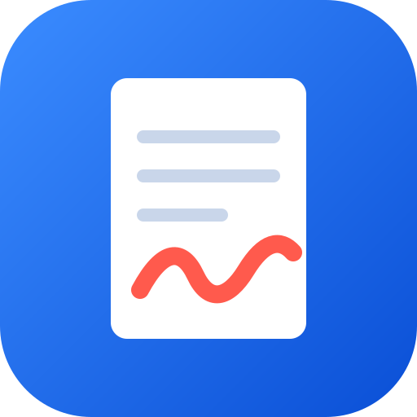

PadNote
PDF 위에 필기하고, 원본과 필기를 한 파일로 저장합니다.
파일은 이 기기 밖으로 나가지 않습니다.
최근 문서
공유 버튼 → 홈 화면에 추가를 하면 전체 화면 앱으로 쓸 수 있고 오프라인에서도 열립니다.

PDF 위에 필기하고, 원본과 필기를 한 파일로 저장합니다.
파일은 이 기기 밖으로 나가지 않습니다.
공유 버튼 → 홈 화면에 추가를 하면 전체 화면 앱으로 쓸 수 있고 오프라인에서도 열립니다.